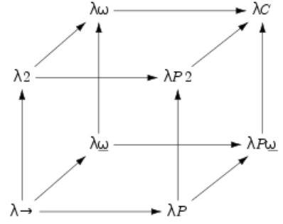

人间正自有赖 嬉戏、无邪与过剩的花朵， 否则世界就太小， 生趣就太枯涸。

# Untyped Lambda Calculus
Definition (The Set Λ of Untyped λ-Terms)
- Variable: If x∈V, then x∈Λ.
- Application: If M,N∈Λ, then (MN)∈Λ.
- Abstraction: If x∈V and M∈Λ, then (λx.M)∈Λ.
Notation(Terms)
- Lowercase latin letters x,y,z,... denote term variables.
- Uppercase latin letters L,M,N,... denote λ-terms.
- Syntactical identity will be denoted with ≡.
Notation(Parentheses)
- Outer most parentheses may be omitted: (λx.(M))=λx.M.
- Application is left-associative: (MN)L≡MNL.
- Abstraction is right-associative: λx.(λy.M)≡λx.λy.M.
- Application takes precedence over abstraction: λx.(MN)=λx.MN.
Definition(The Set of Free Variables FV of a λ-Term)
- Variable: FV(x)={x}.
- Application: FV(MN)=FV(M)∪FV(N).
- Abstraction: FV(λx.M)=FV(M)/{x}.
Definition(α-Conversion)
Two λ-terms M,N∈Λ are α-convertible, denoted by M≡N, if and only if they differ only by the names of their bound variables.
Definition(Barendregt Conversion)
All bound variables in a λ-term M∈Λ should be pairwise different and chosen such that they differ from the free variables in the term.
Definition(Substitution)
- Variable: x[x:=N]≡N. y[x:=N]≡y if x=y.
- Application: (PQ)[x:=N]≡(P[x:=N])(Q[x:=N]).
- Abstraction: (λy.P)[x:=N]≡λy.(P[x:=N]), if y∈/FV(N).
Definition(One-step β-Reduction →β)
- Basis: (λx.M)N→βM[x:=N].
- Compatibility: If M→βN, then ML→βNL, LM→βLN and λx.M→βλx.N.
Definition(Many-step β-Reduction →β∗)
M→β∗N if there is an n≥0 and terms M0,...,Mn∈Λ such that M0≡M,Mn≡N and for all 1≤i≤n:
Mi→βMi+1
Definition(β-Conversion =β)
M=βN if there is an n≥0 and terms M0,...,Mn∈Λ such that M0≡M,Mn≡N and for all 1≤i≤n:
Mi→βMi+1∨Mi+1→βMi
Definition(β-Normal Form)
- M is in β-normal form if M does not contain any redex.
- M has a β-normal form if there is an N∈Λ in β-normal form such that M=βN.
For example, (λx.(λy.xy)z)v has a β-normal form vz.
Ω=(λx.xx)(λx.xx) does not have a β-normal form.
But (λv.u)Ω→βu or get into infinite reduction chain.
Definition(Weak Normalization, Strong Normalization)
- M is weakly normalizing if there is an N∈Λ in β-normal form such that M→β∗N.
- M is strongly normalizing if every chain of reductions starting from M reaches the β-normal form.
Definition(Normalization of Systems)
A rewrite system is strongly/weakly normalizing if every term in the system is strongly/weakly normalizing. Otherwise it is not normalizing.
Theorem:
Let M,N1,N2∈Λ be λ-terms with M→β∗N1 and M→β∗N2.
Then there is a λ-term N3∈Λ such that N1→β∗N3 and N2→β∗N3.
Definition(Natural Numbers N)
- Zero: 0∈N.
- Successor: If n∈N, then succ(n)∈N.
Definition(Church Numerals cn)
0=λf.λx.xn−timessucc(succ(...succ(0)))=λf.λx.n−timesf(f...(fx))
succ≡λm.λf.λx.f(mfx)pred≡λn.λf.λx.n(λg.λh.h(gf))(λu.x)(λu.u)add≡λm.λn.λf.λx.mf(nfx)sub≡λm.λn.(npred)mmul≡λm.λn.λf.λx.m(nf)x
Definition(Church Booleans)
- True: T=λx.λy.x.
- False: F=λx.λy.y.
∧≡λx.λy.xyF∨≡λx.λy.xTy¬≡λx.xFT
“if B then M else N” ≡BMN.
What’s more:
isZero≡λn.n(λx.F)Tleq≡λm.λn.isZero(submn)eq≡λm.λn.(leqmn)∧(leqnm)
Theorem(Fixed Point Theorem):
For all M∈Λ there exists P∈Λ such that MP=βP.
P≡(λx.M(xx))(λx.M(xx)). P→β∗MP.
Definition(Combinator)
A combinator is a term without any free variables.
Definition(Fixed Point Combinator - Mathematics)
A fixed point combinator is a higher-order function that takes a function as argument and returns the fixed point of that function.
Definition(Y - Combinator)
Y≡λf.(λx.f(xx))(λx.f(xx))
We have g(Yg)=βYg. So Yg returns a fixed point of g.
Now we can compute recursive functions:
fact′=λf.λx.(isZerox)1(multx(f(predx)))−−−−−−−−−−−−−−−−−−−−−−−−−−−−−fact=βYfact′=βfact′(Yfact′)=βλx.(isZerox)1(multx((Yfact′)(predx)))≡λx.(isZerox)1(multx(fact(predx)))
Obviously it’s a weakly normalizing term.
# Simple Typed Lambda Calculus(λ→)
Definition(The Set T of Simple Types)
- Variable Type: If α∈V, then α∈T.
- Arrow Type: If σ,τ∈T, then (σ→τ)∈T.
Noticing that V is the set of variables and V is the set of types named variable types.
Notation
- α,β,γ,... denote type variables.
- σ,τ,ρ,... denote arbitrary types.
- Syntactical identity will be denoted with ≡.
- Outermost parentheses may be omitted.
- Arrow types are right-associative: σ→(τ→ρ)≡σ→τ→ρ.
Definition(The Set Λ→ of Pre-Typed λ→-Terms)
- Variable: If x∈V, then x∈Λ→.
- Application: If M,N∈Λ→, then (MN)∈Λ→.
- Abstraction: If x∈V,σ∈T and M∈Λ→, then (λx:σ.M)∈Λ→.
Definition
- A statement is of the form M:σ, M is called the subject and σ the type.
- A declaration is a statement x:σ.
- A context Γ is a set of declarations with different subjects.
- A judgement is of the form Γ⊢M:σ.
- A term M is called legal if there exists Γ and σ such that Γ⊢M:σ.
Derivation Rules:
Γ⊢x:σifx:σ∈Γ(var)Γ⊢MN:τΓ⊢M:σ→τΓ⊢N:σ(appl)Γ⊢λx:σ.M:σ→τΓ,x:σ⊢M:τ(abst)
Type Checking: Given a context Γ, term M and type σ, to check whether Γ⊢M:σ
Well-typedness: Given a term M, to find whether ?⊢M:?.
Type Assignment: Given a context Γ and a term M, to find whether Γ⊢M:?.
Inhabitation: Given a context Γ and a type σ, to find whether Γ⊢?:σ.
λ→ is poly-time decidable!
Definition(Domain)
The domain of a context Γ=x1:σ1,..,xn:σn is dom(Γ)={x1,...,xn}.
Lemma: If Γ⊢M:σ, then FV(M)⊆dom(Γ).
Lemma(Thinning): Let Γ1,Γ2 be contexts with Γ1⊆Γ2. If Γ1⊢M:σ, then also Γ2⊢M:σ.
Lemma(Subterm): If M is a legal term, then all subterms of M are also legal terms.
Lemma(Uniqueness): If Γ⊢M:σ and Γ⊢M:τ, then σ≡τ.
Definition(β-Reduction) (only for legal terms)
- Basis: (λx:σ.M)N→βM[x:=N].
- Compatibility: If M→βN, then ML→βNL, LM→βLN and λx:σ.M→βλx:σ.N.
Lemma (Subject Reduction): If Γ⊢M1:σ and M1→β∗M2, then Γ⊢M2:σ.
Theorem (Church-Rosser Theorem):
Let M,N1,N2∈Λ→ be simply typed λ-terms with M→β∗N1 and M→β∗N2. Then there is a simply typed λ-term N3∈Λ→ such that N1→β∗N3 and N2→β∗N3.
strongly/weakly normalizing and many steps reduction are just similar to untyped ones.
Theorem (Strong Normalization Theorem):
Every legal term in λ→ is strongly normalizing.
Noticing that Self-application is not typable in λ→.
# The Extension λ2
Definition(The Set T2 of λ2 Types)
- Variable Type: If α∈V, then α∈T2.
- Arrow Type: If σ,τ∈T2, then (σ→τ)∈T2.
- Π-type: If α∈V and σ∈T2, then (Πα:∗.σ)∈T2.
Definition(The Set Λ2 of Pre-Typed λ2-Terms)
-
Variable: If x∈V, then x∈Λ2.
-
Application: If M,N∈Λ2, then (MN)∈Λ2.
If M∈Λ2,σ∈T2, then (Mσ)∈Λ2.
-
Abstraction: If x∈V,σ∈T2 and M∈Λ2, then (λx:σ.M)∈Λ2.
If σ∈V,M∈Λ2 then (λσ:∗.M)∈Λ2.
Definition(β-Reduction) (only for legal terms)
-
Basis: (λx:σ.M)N→βM[x:=N].
(λα:∗.M)σ→βM[α:=σ].
-
Compatibility: If M→βN, then ML→βNL, LM→βLN and λx:σ.M→βλx:σ.N.
Definition
- A statement is of the form M:σ, M is called the subject and σ the type.
- A term declaration is a statement x:σ.
- A type declaration is of the form σ:∗.
- A context Γ is a set of declarations with different subjects.
- A judgement is of the form Γ⊢M:σ.
- A term M is called legal if there exists Γ and σ such that Γ⊢M:σ.
Notice! In a valid λ2-context every type variable σ is declared (σ:∗) before it is used (M:σ).
Derivation Rules:
Γ⊢x:σifx:σ∈Γ(var)Γ⊢MN:τΓ⊢M:σ→τΓ⊢N:σ(appl)Γ⊢λx:σ.M:σ→τΓ,x:σ⊢M:τ(abst)Γ⊢B:∗ifB∈T2andallfreetypevariablesinBaredeclaredinΓ(form)Γ⊢(λα:∗.M):(Πα:∗.A)Γ,α:∗⊢M:A(abst2)Γ⊢MB:A[α:=B]Γ⊢M:(Πα:∗.A)Γ⊢B:∗(appl2)
Definition(Type of Church Numerals)
C≡Πα:∗.(α→α)→α→α
Definition(Pair of Church Numerals)
⟨M,N⟩≡λz:C→C→C.zMN:(C→C→C)→Cpair≡(C→C→C)→Cfst≡λp:pair.p(λx:C.λy:C.x)snd≡λp:pair.p(λx:C.λy:C.y)
Now we can reconsider the factorial function:
next⟨n,factn⟩→⟨n+1,factn+1⟩
where
next=λp:pair.⟨succ(fstp),mult(succ(fstp))(sndp)⟩next:pair→pair
So ⟨n,fact(n)⟩=βnextn⟨0,1⟩. It comes back to the form:
λα:∗.λf:α→α.λx:α.fnx:Πα:∗.(α→α)→α→α
What’s interesting, the type is church numerical type! so
cnpairnext⟨0,1⟩=β⟨cn,factcn⟩
where cn is church numerical. So
fact≡λn:C.snd(npairnext⟨0,1⟩):C→C
Church numbers can represent loop somehow.
# The Extension λω (Lambda Weak Omega)
Definition(The Set K of All Kinds)
K=∗∣(K→K).
term:type:kind:sort:□.
Noticing that λω doesn’t support polymorphism, as a matter of fact, such type Πα:∗.α is illegal.
However, if we want to combine polymorphism into lambda weak omega, we need to noticing the difference between ∗→∗ and Πα:∗,α→α:
we can write:
(λα:∗.λx:α.x):(Πα:∗.α→α):∗
since Πα:∗.α→α is a specific type, so its kind is ∗.
while λα:∗.α→α:∗→∗, it’s considered as the type constructor.
(λα:∗.λx:α.x):(λα:∗.α→α) is wrong!
(λα:∗.λx:α.x):∗→∗ is wrong!
Derivation Rules:
∅⊢∗:□(sort)Γ,x:A⊢x:AΓ⊢A:sifx∈/Γ(var)Γ,x:C⊢A:BΓ⊢A:BΓ⊢C:sifx∈/Γ(weak)Γ⊢A→B:sΓ⊢A:sΓ⊢B:s(form)Γ⊢MN:BΓ⊢M:A→BΓ⊢N:A(appl)Γ⊢λx:A.M:A→BΓ,x:A⊢M:BΓ⊢A→B:s(abst)Γ⊢A:B′Γ⊢A:BΓ⊢B′:sifB=βB′(conv)
| L1 |
L2 |
L3 |
L4 |
| λx:α.x(terms) |
α→α(type) |
∗(kind) |
□(sort) |
|
λα:∗.α(type constructor) |
∗→∗(kind) |
□(sort) |
The derivation rules seem strange in that the only axiom is ∗:□, which is the relation between L3 and L4.
And we can derive:
σ:∗⊢σ:∗∅⊢∗:□(var)
it’s the relation between L2 and L3.
And we can derive:
σ:∗,x:σ⊢x:σσ:∗⊢σ:∗(var)
it’s the relation between L1 and L2.
So we can discover that the derivation rule var can be applied between any two adjacent layers.
Similarly, In weak derivation rule, x can be types or terms.
In form rules, A can be types or kinds.
In appl rules, M can be terms or type constructors.
In abst rules, A can be types or kinds.
Γ⊢σ:∗ means σ is a well-formed type. Γ⊢λα:∗.α:∗→∗ means λα:∗.α is a well-formed type constructor. Γ⊢∗→∗:□ means ∗→∗ is a well-formed kind.
# The Extension λP (Lambda P)
Derivation Rules:
∅⊢∗:□(sort)Γ,x:A⊢x:AΓ⊢A:sifx∈/Γ(var)Γ,x:C⊢A:BΓ⊢A:BΓ⊢C:sifx∈/Γ(weak)Γ⊢Πx:A.B:sΓ⊢A:∗Γ,x:A⊢B:s(form)Γ⊢MN:B[x:=N]Γ⊢M:Πx:A.BΓ⊢N:A(appl)Γ⊢λx:A.M:A→BΓ,x:A⊢M:BΓ⊢A→B:s(abst)Γ⊢A:B′Γ⊢A:BΓ⊢B′:sifB=βB′(conv)
# Propositions as Types
PAT: Propositions As Types and Proofs As Terms
M:σ, M corresponds to a proof and σ corresponds to a proposition.
σ is inhabited ⇔ P is proved.